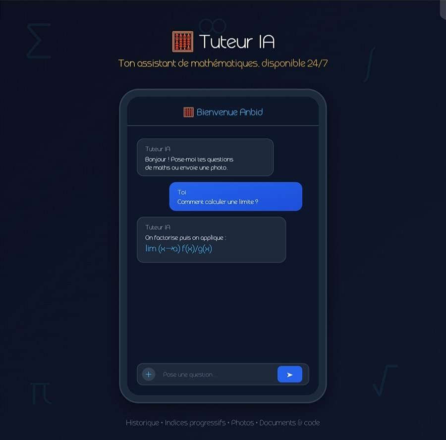
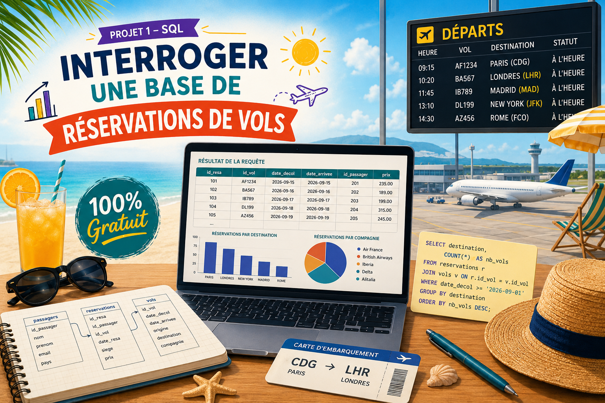
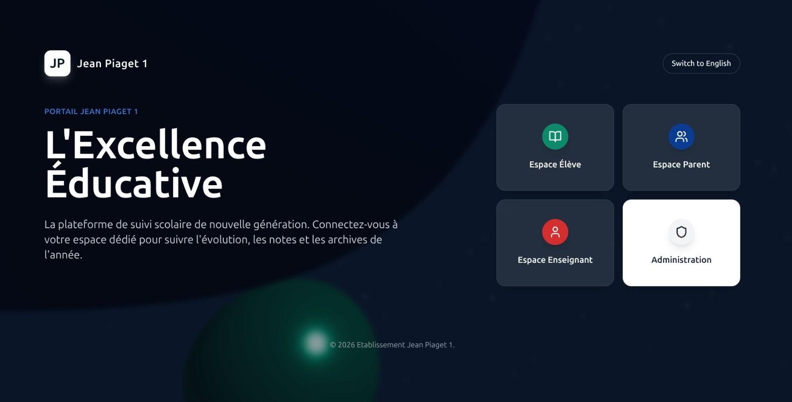

Baccalauréat — Mention Très Bien
Moyenne de 15 en classe de terminale et troisième place au niveau national.
Étudiant · développeur · curieux
Étudiant en classe préparatoire à l'IMSP, je construis des projets en C, Python, web et je suis passionné d'intelligence artificielle.
01 / Profil
Je m'appelle Soule Salifou Ola Anbid. Je développe un profil à la rencontre des mathématiques, de la programmation et de l'intelligence artificielle.
Lauréat d'une bourse d'excellence au Bénin et étudiant à l'IMSP, j'aime comprendre les systèmes en profondeur avant de les transformer en projets utiles. Ce portfolio rassemble mes expériences, mes apprentissages et les réalisations qui montrent mon évolution.
02 / Parcours
Résultat marquant
Une année exigeante en mathématiques, physique et informatique, menée avec régularité.
Moyenne de 15 en classe de terminale et troisième place au niveau national.
Spécialisation progressive en mathématiques, informatique et résolution de problèmes.
Préparer une école d'ingénieurs en intelligence artificielle tout en développant des projets personnels.
Club d'intelligence artificielle · club de football · apprentissage autonome
03 / Certifications
Cette section accueillera progressivement mes certifications, attestations de formation et distinctions académiques.
À compléter
Titre de la certification, organisme émetteur, date d'obtention et lien vers le document.
À compléter
Formations suivies en programmation, data, intelligence artificielle ou outils numériques.
À compléter
Bourses, concours, responsabilités associatives et autres attestations importantes.
04 / Compétences
Machine learning, Flask, Django (débutant), traitement de données.
IntermédiaireLogique, structures, algorithmique et développement d'un jeu Snake.
IntermédiaireHTML, CSS, JavaScript et interfaces statiques responsive.
En progressionLangChain, Ollama, RAG, SQL, Matplotlib et expérimentation ML.
Exploration05 / Sélection
Une sélection de travaux qui documentent mon apprentissage, de l'IA locale aux interfaces web.

01 / IAProjet personnel
Un assistant local basé sur Ollama et RAG pour accompagner les exercices, avec historique et analyse de documents.

02 / DATAProjet personnel
Sept mini-projets de machine learning et deep learning construits de A à Z dans une formation collaborative.

03 / WEBCollaboration
Un site complet conçu avec un collaborateur pour présenter un établissement scolaire.
Projet personnel
Une première expérience de conception d'une interface de commerce avec panier et interactions côté client.
Projet personnel
Une application métier pour directions, enseignants, élèves et parents : notes, absences, bulletins PDF et actualités.
Projet personnel
Gestion des résidents, bâtiments, absences et rotations hebdomadaires avec affectation automatique.
Projet personnel
Un quiz local avec progression, correction immédiate, score final et ajout de questions personnalisées.
06 / Contact
Le plus simple est de m'écrire. Je réponds avec plaisir aux échanges autour de la programmation, de l'IA et des projets web.